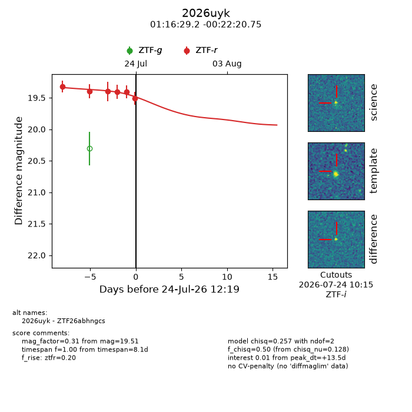
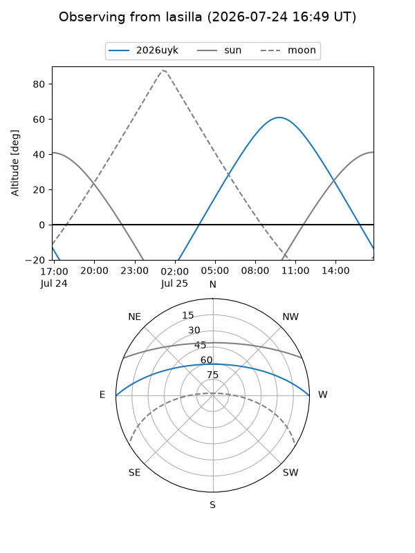
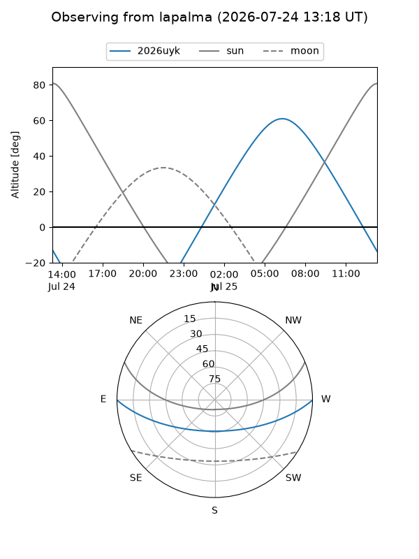
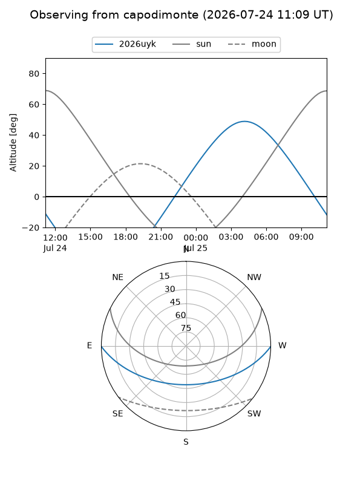
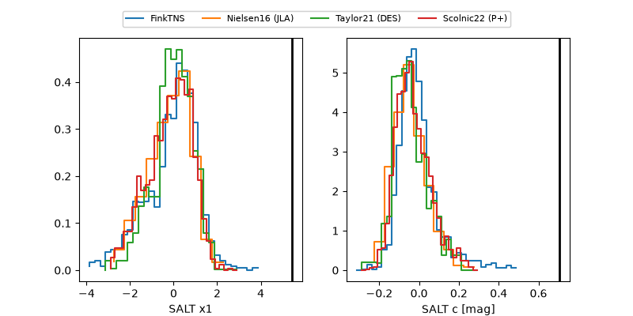

2026uyk
Target 2026uyk at 2026-07-24 12:21
Aliases and brokers:
FINK-ZTF: ztf.fink-portal.org/ZTF26abhngcs
Lasair-ZTF: lasair-ztf.lsst.ac.uk/objects/ZTF26abhngcs
ALeRCE-ZTF: alerce.online/object/ZTF26abhngcs
YSE-PZ: ziggy.ucolick.org/yse/transient_detail/2026uyk
TNS name: wis-tns.org/object/2026uyk
Direct TNS query: direct search
alt names
ZTF26abhngcs (ztf,fink_ztf)
2026uyk (tns,yse)
Coordinates:
equatorial (ra, dec) = 19.1217,-0.37243
equatorial (HMS+DMS) = 01:16:29.21,-00:22:20.75
galactic (l, b) = (136.6314,-62.57604)
Flags:
TNS type: nan
peak dt: +13.5
Photometry:
last ztfr=19.51
6 ztfr detections
Lightcurve

Visibility



Additional plots
